PaperWeekly第四期
引
2013年以来Deep mind团队相继在NIPS和Natures上发表了用深度增强（强化）学习玩Atari游戏，并取得良好的效果，随后Alpha go与李世乭的一战更使得深度增强学习家喻户晓。在游戏上取得了不错的成果后，深度增强学习也逐渐被引入NLP领域。本期介绍目前NLP领域较为热点的研究方向，基于强化学习的文本生成技术（NLG），共选择了三篇文章，分别为：
(1)《Generating Text with Deep Reinforcement Learning》
应用Deep Q-Network作为生成模型用于改善seq2seq模型
(2) 《Deep Reinforcement Learning for Dialogue Generation》
应用强化学习进行开放领域的文本生成任务，并对比了有监督的seq2seq加attention模型和基于最大互信息的模型
(3)《Hierarchical Reinforcement Learning for Adaptive Text Generation_lshowway》
以任务为导向的户内导航对话系统用分层强化学习进行文本生成
以下为三篇文章的主要信息：
Generating Text with Deep Reinforcement Learning
作者
Hongyu Guo
单位
National Research Council Canada
关键词
Reinforcement Learning、Seq2Seq、Text Generation
来源
NIPS2015 Workshop (2015.10.30)
问题
本文提出将Deep Q-Network作为生成模型用于改善seq2seq模型，将decoding修改为迭代式的过程，实验表明本模型具有更好的泛化性。
模型
对seq2seq模型改进的论文层出不穷，本文率先引入深度强化学习的思想，将DQN用于文本生成。对DQN还不了解的同学可以先阅读DeepMind的论文Playing Atari with Deep Reinforcement Learning。本文的模型如下：
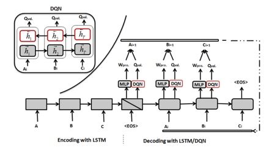
如同一般的神经网络，我们也可以把DQN当做一个黑盒来使用。只需要准备好DQN需要的四个元素s(i),a(i),r(i),s(i+1)，分别代表i时刻下state,action,reword和i+1时刻的state。
对照上图我们把算法解剖分为4个步骤：
Step 1: 先是传统的seq2seq模型。通过LSTM先把输入序列encode为一个定长向量EnSen(i)，然后作为decode阶段的初始状态依次生成新的序列DeSen(i)（decoding search使用beam search算法来 expand next words）。经过第一步我们得到初始state：(EnSen(i), DeSen(i))和action集合：每个位置的hypotheses。
Step 2: 接下来从hypotheses（actions）中选择一个可以获得最大reward的单词（action）作为该位置新生成的词，用新单词来代替之前的旧词，于是生成新的state：(EnSen(i), DeSen(i+1))。
Step 3: 接着就是标准的DQN的部分，计算Loss函数并对其应用梯度下降。
Step 4: 回到Step 2，对得到的state继续迭代，每一次迭代都只生成一个新词来代替旧词，直到迭代次数达到设好的值（作者将次数定为句子长度的两倍，同学们可以思考一下理由）。
总结DQN所需的四个元素对应如下：
(1) i时刻下的state：(EnSen(i), DeSen(i))；
(2) i时刻下的action：beam search得到的每个位置的hypotheses；
(3) i时刻下的reword：target sentence和DeSen(i+1)的相似度（BLEU score）；
(4) i+1时刻下的state：(EnSen(i), DeSen(i+1))；
为了更好的提取句子的特征，作者在decode阶段使用了双向LSTM。同时还在reinforcement learning中加入attention机制，可以达到先decode比较简单的部分再处理困难部分的效果。最后在生成相似句子的实验中得到了比只用LSTM decoder效果更好的结论：
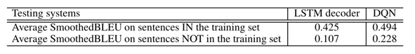
相关工作
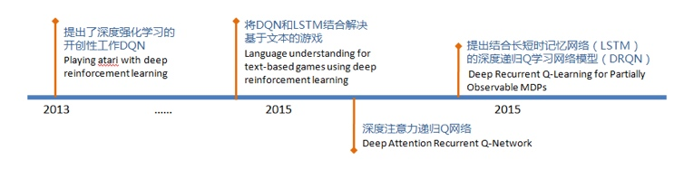
简评
本文的思想其实非常符合写作的一种情况，就像贾岛推敲的故事，回想小时候刚学习写句子时，也不能一次写好，总会不断对一些词语进行修改。Google DeepMind的文章《DRAW：A Recurrent Neural Network For Image》也和本文异曲同工：画画也不是一次画好，也要不断的完善。不同之处在于本文率先引入DQN做文本生成。在机器学习各个分支下，强化学习和人类与环境的交互方式非常相似，在许多领域开始初露头角，期待看到更多将强化学习结合语言模型的应用。
Deep Reinforcement Learning for Dialogue Generation
作者
Jiwei Li, Will Monroe, Alan Ritter, Michel Galley, Jianfeng Gao, Dan Jurafsky
单位
(1) Stanford University, Stanford, CA, USA
(2) Microsoft Research, Redmond, WA, USA
(3) Ohio State University, OH, USA
关键词
Reinforcement Learning、Seq2Seq、Text Generation
来源
arXiv.org(2016.06.25)
问题
本文提出利用强化学习进行开放领域的文本生成任务，并对比了有监督的seq2seq加attention模型和基于最大互信息的模型
模型
强化学习中的reward
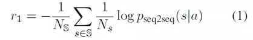
易被响应（Ease of answering），不容易出现对话僵局，其中 S 是无意义回答合集，s是某一时刻的响应
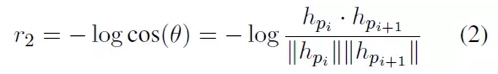
信息流，若开辟新的话题，有利于对话的继续发展，隐层表示 hpi 和 hpi+1 的夹角余弦
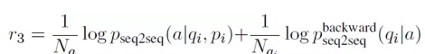
语义连贯性，减少与对话无关问题的影响，其中，pseq2seq(a|pi,qi) 是由上一轮状态得到响应的概率，后一项是由当前产生响应通过网络生成之前的 qi 的概率。
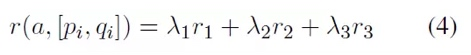
最终的reward是对三者加权求和，系数分别为：0.25、0.25、0.5.
对比试验：
(1) 对话初始状态为一个SEQ2SEQ加attention的模型作为强化学习的初始状态。
(2) 在前面的基础上将最大互信息加入其中作为reward，对于一个给定的输入[pi,qi]，可以根据模型生成一个候选回答集合A。对于A中的每一个回答a,从预训练模型中得到的概率分布上可以计算出互信息的值 m(a,[pi,qi])。
(3) 将互信息训练过的模型作为初始模型，用策略梯度更新参数并加入课程学习策略，最终最多限定五轮对话。
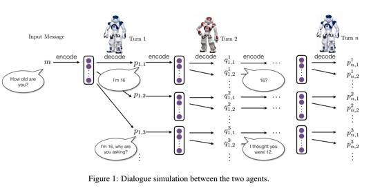
相关工作
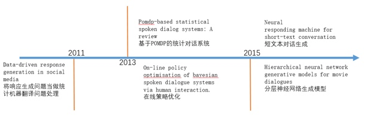
简评
本文作者提出了一个强化学习框架，模拟两个agent让其自动对话训练神经网络SEQ2SEQ模型，将Encoder-Decoder模型和强化学习整合，从而能保证使对话轮数增加。文中使用的模型非常简洁，reward函数定义清晰，评价指标也较为科学，可以生成信息更为丰富、易于响应的对话系统。
Hierarchical Reinforcement Learning for Adaptive Text Generation
作者
Nina Dethlefs, Heriberto Cuay´ahuitl
单位
University of Bremen, Germany
关键词
NLG, 分层强化学习, 文本生成, wayfinding
来源
国际自然语言生成会议INLG(2010)
问题
在wayfinding（户内导航对话系统）领域利用分层强化学习进行文本生成。该方法的目标是对wayfinding的NLG任务整合进行优化，并在模拟系统中验证该方法的有效性。
模型
本文任务在wayfinding中的NLG任务有多个，且各个任务之间并非独立。从而提出应该根据用户类型，导航距离， 环境条件等作出不同的导航策略，介绍了分层强化学习。
文章将户内导航对话系统的文本生成问题分为四块：
(1) Content Selection：给不熟悉环境的用户的导航要比熟悉环境的用户的导航更细致
(2) Text Structure：根据导航距离以及用户熟悉环境程度给予不同类型的导航，如大白话的，以fisrt， second…表达或者示意性的。
(3) Referring Expression Generation：一间房间可以叫“A203”，也可以叫“办公室”或者“小白楼”
(4) Surface Realisation：往前走可以用“go”也可以用“walk”等。
强化学习示意图如下，分层强化学习的思想与强化学习类似，但在强化学习的基础上加上层次，不同层次的模型处理不同层次的问题。
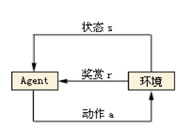
agent根据当前状态，执行动作a与环境交互，之后环境产生一个新的状态s并返回给agent一个奖赏r（可正可负），强化学习的目标函数便是使agent获得奖赏r最大。
分层增强学习包含L个层，每层N个模型，如Figure 1是有15个agents的hierarchy，其中不同的agent负责不同的层次。
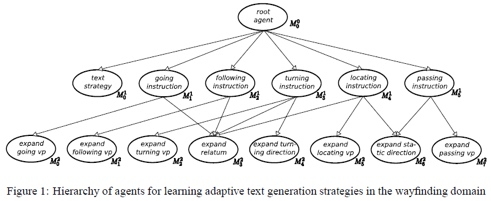
每个agent定义为半马尔科夫决策过程，可以表示成一个四元组
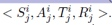
分别为状态集，动作集，转换函数，奖励函数。
奖励函数表示agent在时间t状态s是执行动作a转换到新的状态s’所获得的奖励。半马尔科夫的目标是找到policy π*，
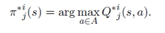
使得在从当前状态转换到新的状态获得的累计奖励最多。
本文使用两种奖励函数，一种着重在 interaction length， 另一种着重在alignment and variation之间的平衡（具体公式可见论文）。
本文是在模拟环境中进行试验，其中模拟环境包括user type（熟悉环境，不熟悉环境）， information need（高，低），length of the current route（短，中长，长），next action to perform（转，直走），current focus of attention（继续走，关注标识）。baseline为为部分agent随机选择action，即不考虑用户类型，导航距离等因素。经与baseline比较，效果较好。
资源
词性标注工具：http://nlp.stanford.edu/software/tagger.shtml
简评
将来的工作：将分层强化学习应用于其他NLG任务
不足之处：实验是在模拟环境下进行的，未来应该在真实环境进行评估。
总结
这三篇文章皆是强化学习在NLP领域的应用，第一篇主要侧重点在于应用DQN进行文本生成，并用BLUE指标进行评价，对比传统的LSTM-decoder和加入DQN之后的结果；第二篇文章侧重点在于虚拟两个Agent，在传统Seq2Seq的基础上加入强化学习从而使得聊天能够持续下去；第三篇文章侧重点在于任务驱动的对话系统应用分层强化学习，针对不同情况进行分层处理。
以上为本期Paperweekly的主要内容，感谢lshowway、美好时光海苔、Tonya三位同学的整理。
广告时间
PaperWeekly是一个分享知识和交流学问的民间组织，关注的领域是NLP的各个方向。如果你也经常读paper，也喜欢分享知识，也喜欢和大家一起讨论和学习的话，请速速来加入我们吧。
微信公众号：PaperWeekly
微博账号：PaperWeekly（http://weibo.com/u/2678093863 ）
知乎专栏：PaperWeekly（https://zhuanlan.zhihu.com/paperweekly ）
微信交流群：微信+ zhangjun168305（请备注：加群 or 加入paperweekly）